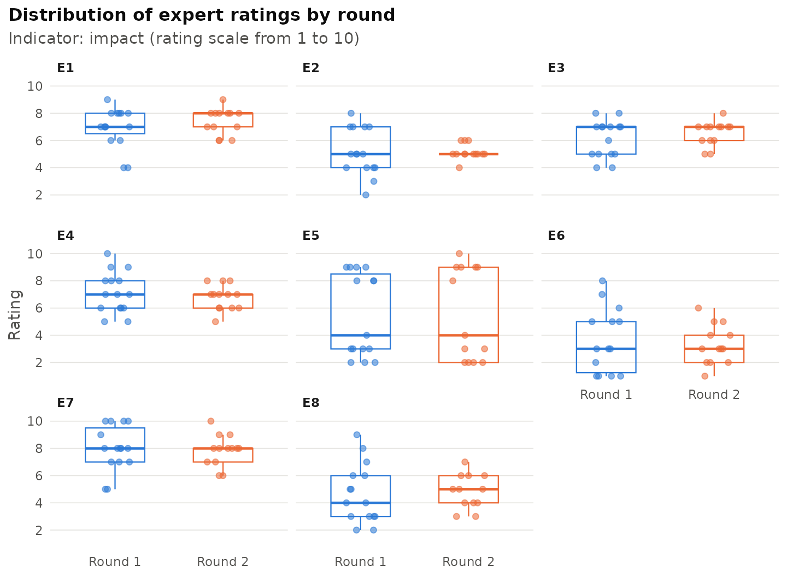
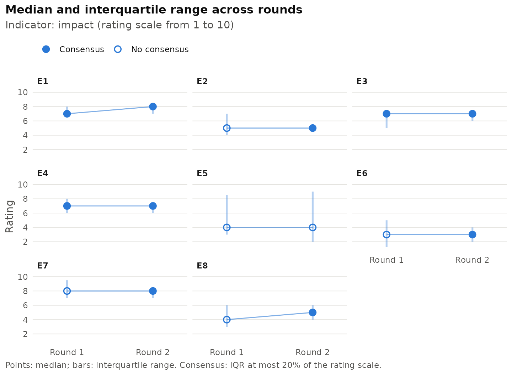
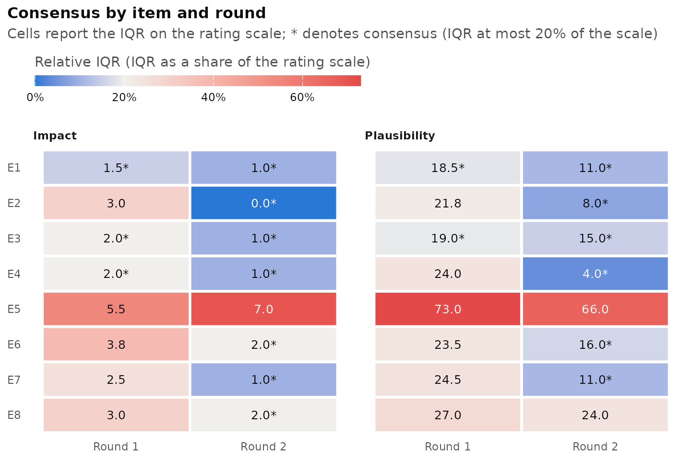
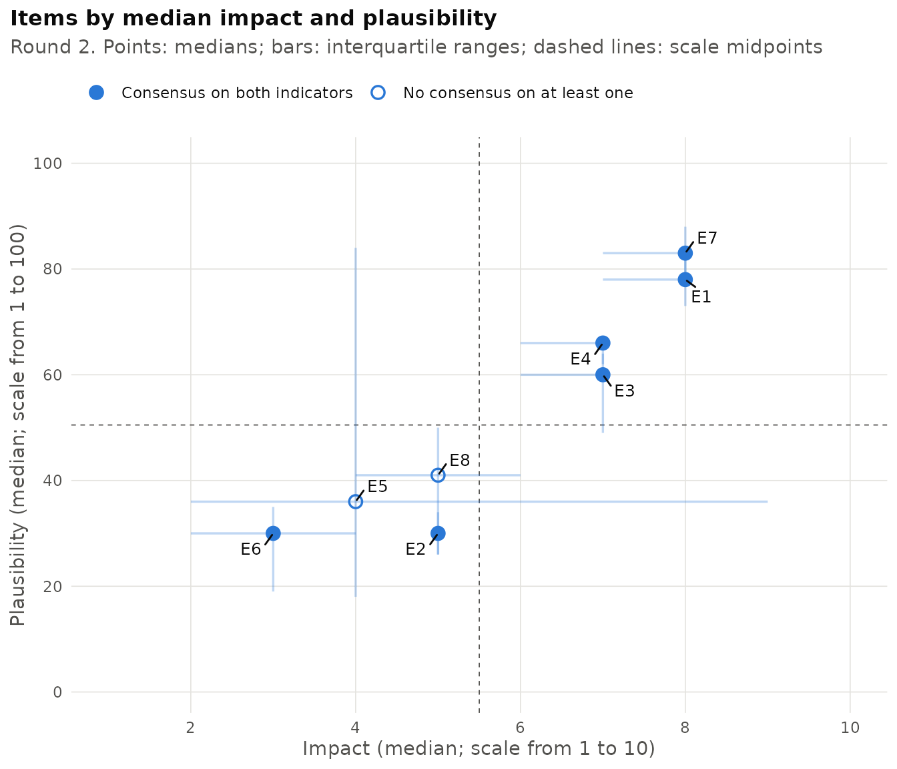

The Delphi method elicits the judgements of a panel of experts through successive rounds of anonymous rating, interleaved with controlled feedback on the distribution of the group’s responses. The analysis of each round typically addresses four questions: how the ratings are distributed, whether the panel has reached consensus, whether the ratings have stabilised between rounds, and which items should be submitted to a further round. DelphiR provides a consistent workflow for these steps, from the import of the raw ratings to a complete round report.
Data format
DelphiR is built around a wide layout: each row contains the ratings given by one expert, each column refers to one item, and each cell holds a numeric rating. Empty cells denote missing ratings (item non-response).
| expert | round | indicator | E1 | E2 | E3 |
|---|---|---|---|---|---|
| EXP01 | 1 | impact | 9 | 7 | 5 |
| EXP02 | 1 | impact | 6 | 5 | 7 |
| EXP03 | 1 | impact | 8 | 6 |
Three columns describe the context of each row:
- the expert identifier, which is required to follow the same expert across rounds;
- the round number (1, 2, …);
- the indicator, such as impact or plausibility, when the same items are rated on more than one dimension.
The round and indicator columns are optional. When they are absent,
the table is treated as a single round and a single indicator, specified
through the round and indicator arguments.
Each indicator has its own rating scale, against which the ratings are
validated.
delphi_template() creates an empty Excel file in this
format, with a sheet for the ratings, a sheet for the full statements of
the items and a sheet of instructions that includes the code needed to
import the completed file.
delphi_template("my_delphi.xlsx", items = 12,
indicators = c("impact", "probability"))Importing the ratings
Ratings can be imported from a data frame with
delphi_data() or directly from a CSV, TSV or Excel file
with read_delphi(). The separator and the decimal mark of
text files are detected automatically, including the semicolon-separated
files with decimal commas produced by many European spreadsheet
applications.
path <- system.file("extdata", "delphi_round1.csv", package = "DelphiR")
r1 <- read_delphi(path, expert_col = "expert",
indicator = "impact", scale = c(1, 10))
r1
#> <delphi_data>
#> Experts: 15
#> Rounds: 1 (1)
#> Items: 8 (E1, E2, E3, E4, E5, ..., E8)
#> Indicators: impact (from 1 to 10)
#> Ratings: 119 (1 missing)
#> Use summary() for descriptive statistics.Tables referring to different rounds or indicators can be imported
separately and combined with delphi_bind(), for example
delphi_bind(r1, r2). Alternatively, rounds and indicators
can be stacked in a single table, as in the example dataset shipped with
the package, in which fifteen experts rated eight items on impact (from
1 to 10) and plausibility (from 1 to 100) over two rounds.
head(delphi_example)
#> expert round indicator E1 E2 E3 E4 E5 E6 E7 E8
#> 1 EXP01 1 impact 9 7 5 10 3 1 5 6
#> 2 EXP02 1 impact 6 5 7 9 9 7 10 2
#> 3 EXP03 1 impact 8 5 6 7 3 NA 8 8
#> 4 EXP04 1 impact 8 3 7 9 8 3 10 3
#> 5 EXP05 1 impact 7 5 7 8 2 5 5 3
#> 6 EXP06 1 impact 4 4 8 5 8 1 8 2
x <- delphi_data(
delphi_example,
expert_col = "expert", round_col = "round", indicator_col = "indicator",
scale = list(impact = c(1, 10), plausibility = c(1, 100))
)
x
#> <delphi_data>
#> Experts: 15
#> Rounds: 2 (1, 2)
#> Items: 8 (E1, E2, E3, E4, E5, ..., E8)
#> Indicators: impact (from 1 to 10), plausibility (from 1 to 100)
#> Ratings: 445 (3 missing)
#> Use summary() for descriptive statistics.Ratings outside the declared scale, non-numeric entries and duplicated experts are reported with an informative error, so that coding mistakes are detected before any analysis is carried out. Rows without an expert identifier, such as summary rows with medians or quartiles added below the data, are ignored with a warning.
Long format
Ratings can also be supplied in long format, with one row per rating
and columns for the expert, the item and the value, and optionally the
round and the indicator. This is the format produced by most statistical
software when data are reshaped. Long tables are imported with
delphi_data_long() or with
read_delphi(layout = "long"), and any
delphi_data object can be returned to this format with
as.data.frame().
long <- as.data.frame(x)
head(long)
#> expert round indicator item value
#> 1 EXP01 1 impact E1 9
#> 2 EXP02 1 impact E1 6
#> 3 EXP03 1 impact E1 8
#> 4 EXP04 1 impact E1 8
#> 5 EXP05 1 impact E1 7
#> 6 EXP06 1 impact E1 4
x_long <- delphi_data_long(
long, round_col = "round", indicator_col = "indicator",
scale = list(impact = c(1, 10), plausibility = c(1, 100))
)
identical(x_long$data, x$data)
#> [1] TRUESurvey exports with two header rows
When each item is rated on several indicators, survey platforms and spreadsheets often place the indicators side by side, with a first header row naming the indicator of each column and a second row giving the item statement above each group of columns:
| Impact | Probability | Impact | Probability | ||
|---|---|---|---|---|---|
| ID | Age | 1. First statement | 2. Second statement | ||
| 11 | 30 | 8 | 6 | 5 | 4 |
Such files are read with header_rows = 2. Items are
coded E1, E2, … in order of appearance, their
statements are stored as labels and used in reports, and columns without
an indicator (such as Age) are ignored. Indicator names can
be translated or shortened with indicator_names.
r1 <- read_delphi(
"study.xlsx", sheet = "ROUND_1", header_rows = 2,
expert_col = "ID", round = 1, scale = c(1, 10),
indicator_names = c(IMPATTO = "impact", PROBAB = "probability")
)Linked and unlinked panels
Comparisons between rounds at the level of the individual expert
require that the same expert has the same identifier in every round.
This is not the case when each round is collected with a separate
questionnaire and the identifiers are response numbers: the same number
then denotes different people. Declaring linked = FALSE
prevents spurious pairings: retention is not computed, and stability is
assessed by comparing the rounds as independent samples (see below).
Tables imported without an expert identifier are treated as
unlinked.
Descriptive statistics and panel participation
summary() gives an overview of the panel and of the
median and interquartile range (IQR) of each item by round. Items that
reach consensus are marked with an asterisk.
summary(x)
#> Delphi study summary
#>
#> Panel
#> round respondents retained dropped joined retention
#> 1 15 NA NA NA 100%
#> 2 13 13 2 0 87%
#>
#> Indicator: impact (scale from 1 to 10)
#> Median [IQR] by round (* = consensus)
#> Round 1 Round 2
#> E1 7 [1.5] * 8 [1] *
#> E2 5 [3] 5 [0] *
#> E3 7 [2] * 7 [1] *
#> E4 7 [2] * 7 [1] *
#> E5 4 [5.5] 4 [7]
#> E6 3 [3.75] 3 [2] *
#> E7 8 [2.5] 8 [1] *
#> E8 4 [3] 5 [2] *
#>
#> Indicator: plausibility (scale from 1 to 100)
#> Median [IQR] by round (* = consensus)
#> Round 1 Round 2
#> E1 77 [18.5] * 78 [11] *
#> E2 28 [21.75] 30 [8] *
#> E3 62 [19] * 60 [15] *
#> E4 63 [24] 66 [4] *
#> E5 30 [73] 36 [66]
#> E6 30 [23.5] 30 [16] *
#> E7 80 [24.5] 83 [11] *
#> E8 40 [27] 41 [24]
#>
#> Consensus rule: IQR <= 20% of the scale.
#> Full tables: delphi_describe(x), delphi_consensus(x).delphi_describe() returns the full set of descriptive
statistics, and delphi_panel() the number of respondents
and the retention rate in each round.
head(delphi_describe(x, indicator = "impact"))
#> indicator round item n missing mean sd median q1 q3 iqr iqr_rel min max
#> impact 1 E1 15 0 6.93 1.44 7 6.50 8.0 1.50 0.15 4 9
#> impact 1 E2 15 0 5.13 1.73 5 4.00 7.0 3.00 0.30 2 8
#> impact 1 E3 15 0 6.13 1.36 7 5.00 7.0 2.00 0.20 4 8
#> impact 1 E4 15 0 7.13 1.51 7 6.00 8.0 2.00 0.20 5 10
#> impact 1 E5 15 0 5.47 3.07 4 3.00 8.5 5.50 0.55 2 9
#> impact 1 E6 14 1 3.64 2.37 3 1.25 5.0 3.75 0.38 1 8
#> cv
#> 0.21
#> 0.34
#> 0.22
#> 0.21
#> 0.56
#> 0.65
delphi_panel(x)
#> round respondents retained dropped joined retention
#> 1 1 15 NA NA NA 1.0000000
#> 2 2 13 13 2 0 0.8666667Quartiles are computed with R’s default algorithm
(type = 7). Setting type = 6 reproduces the
quartiles reported by SPSS and Minitab, which facilitates comparison
with studies analysed with that software.
Consensus
Following the review of consensus measures by von der Gracht (2012),
an item is considered to have reached consensus when its IQR does not
exceed 20% of the rating scale. By default, the scale is measured by its
number of points, so that the threshold corresponds to an IQR of at most
1 on a five-point scale and at most 2 on a ten-point scale. The
threshold can be changed with threshold, and
relative_to = "range" measures the scale as its maximum
minus its minimum, which is preferable for continuous scales.
cons <- delphi_consensus(x, round = 2)
cons
#> Consensus rule: IQR <= 20% of the scale (number of points)
#>
#> indicator round item n median q1 q3 iqr iqr_rel iqr_max consensus
#> impact 2 E1 13 8 7 8 1 0.10 2 TRUE
#> impact 2 E2 13 5 5 5 0 0.00 2 TRUE
#> impact 2 E3 13 7 6 7 1 0.10 2 TRUE
#> impact 2 E4 13 7 6 7 1 0.10 2 TRUE
#> impact 2 E5 13 4 2 9 7 0.70 2 FALSE
#> impact 2 E6 13 3 2 4 2 0.20 2 TRUE
#> impact 2 E7 13 8 7 8 1 0.10 2 TRUE
#> impact 2 E8 12 5 4 6 2 0.20 2 TRUE
#> plausibility 2 E1 13 78 73 84 11 0.11 20 TRUE
#> plausibility 2 E2 13 30 26 34 8 0.08 20 TRUE
#> plausibility 2 E3 13 60 49 64 15 0.15 20 TRUE
#> plausibility 2 E4 13 66 62 66 4 0.04 20 TRUE
#> plausibility 2 E5 13 36 18 84 66 0.66 20 FALSE
#> plausibility 2 E6 13 30 19 35 16 0.16 20 TRUE
#> plausibility 2 E7 13 83 77 88 11 0.11 20 TRUE
#> plausibility 2 E8 13 41 26 50 24 0.24 20 FALSE
#>
#> Items with consensus:
#> impact, round 2: 7 of 8
#> plausibility, round 2: 6 of 8Stability
Consensus describes the agreement of the panel within a round;
stability describes whether the ratings have ceased to change between
rounds. When the experts are linked across rounds,
delphi_stability() compares consecutive rounds on the
experts who rated the item in both, so that attrition is not mistaken
for a change of opinion. Two criteria are available: the Wilcoxon test
(the default), under which an item is stable when the test is not
significant, and a criterion based on Scheibe, Skutsch and Schofer
(1975), under which an item is stable when the net change between the
two rating distributions does not exceed 15%. The net change is half the
sum of the absolute differences between the shares of experts in each
class of the scale, that is, the share of experts who would have to move
to turn one distribution into the other. Setting
method = "both" requires both conditions. With linked
experts the Wilcoxon test is the paired signed-rank test; with unlinked
experts the rounds are compared as independent samples with the rank-sum
(Mann-Whitney) test, and differences between rounds then reflect both
changes of opinion and changes in the composition of the panel.
delphi_stability(x, indicator = "impact")
#> Stability criterion: Wilcoxon signed-rank test, stable if p >= 0.05
#> Paired comparison on the experts who answered both rounds.
#>
#> indicator item round_from round_to n_paired median_from median_to iqr_from
#> impact E1 1 2 13 7 8 1.50
#> impact E2 1 2 13 5 5 3.00
#> impact E3 1 2 13 7 7 2.00
#> impact E4 1 2 13 7 7 2.00
#> impact E5 1 2 13 4 4 5.50
#> impact E6 1 2 12 3 3 3.75
#> impact E7 1 2 13 8 8 2.50
#> impact E8 1 2 12 4 5 3.00
#> iqr_to changed p_value scheibe_change stable
#> 1 0.62 0.10 0.23 TRUE
#> 0 0.69 0.85 0.62 TRUE
#> 1 0.46 0.13 0.31 TRUE
#> 1 0.62 0.41 0.23 TRUE
#> 7 0.23 0.77 0.15 TRUE
#> 2 0.67 0.52 0.42 TRUE
#> 1 0.62 0.53 0.31 TRUE
#> 2 0.83 0.64 0.33 TRUE
#>
#> Stable items:
#> impact, round 1 to 2: 8 of 8
#> All columns: as.data.frame(x).Item status and the next round
delphi_status() combines consensus and stability into
four categories: consensus (consensus reached and stable),
unstable consensus (consensus reached, but ratings still
changing), stable dissent (no consensus, but ratings no longer
changing) and open (neither). Items with an unstable consensus
or an open status are flagged for a further round. A stable dissent is a
substantive result: it indicates a persistent disagreement that a
further round is unlikely to resolve.
st <- delphi_status(x)
st
#> indicator item round median iqr consensus stable status
#> impact E1 2 8 1 TRUE TRUE consensus
#> impact E2 2 5 0 TRUE TRUE consensus
#> impact E3 2 7 1 TRUE TRUE consensus
#> impact E4 2 7 1 TRUE TRUE consensus
#> impact E5 2 4 7 FALSE TRUE stable dissent
#> impact E6 2 3 2 TRUE TRUE consensus
#> impact E7 2 8 1 TRUE TRUE consensus
#> impact E8 2 5 2 TRUE TRUE consensus
#> plausibility E1 2 78 11 TRUE TRUE consensus
#> plausibility E2 2 30 8 TRUE TRUE consensus
#> plausibility E3 2 60 15 TRUE TRUE consensus
#> plausibility E4 2 66 4 TRUE TRUE consensus
#> plausibility E5 2 36 66 FALSE TRUE stable dissent
#> plausibility E6 2 30 16 TRUE TRUE consensus
#> plausibility E7 2 83 11 TRUE FALSE unstable consensus
#> plausibility E8 2 41 24 FALSE TRUE stable dissent
#> next_round
#> FALSE
#> FALSE
#> FALSE
#> FALSE
#> FALSE
#> FALSE
#> FALSE
#> FALSE
#> FALSE
#> FALSE
#> FALSE
#> FALSE
#> FALSE
#> FALSE
#> TRUE
#> FALSE
#>
#> impact, round 2: 7 consensus, 0 unstable consensus, 1 stable dissent, 0 open
#> Items for the next round: none
#>
#> plausibility, round 2: 5 consensus, 1 unstable consensus, 2 stable dissent, 0 open
#> Items for the next round: E7
subset(st, next_round)
#> indicator item round median iqr consensus stable status
#> plausibility E7 2 83 11 TRUE FALSE unstable consensus
#> next_round
#> TRUE
#>
#> plausibility, round 2: 0 consensus, 1 unstable consensus, 0 stable dissent, 0 open
#> Items for the next round: E7Figures
DelphiR draws four figures with ggplot2, all available through
plot(). They are returned as ggplot objects and can
therefore be modified with the usual ggplot2 syntax or saved with
ggplot2::ggsave().
The distribution of the ratings in each round shows how the panel converges or remains divided.
plot(x, type = "distribution", indicator = "impact")
The median and IQR across rounds summarise the same information; filled points denote consensus.
plot(x, type = "trend", indicator = "impact")
The consensus heat map displays the relative IQR of every item in every round, coloured relative to the consensus threshold. Since the relative IQR does not depend on the scale, indicators rated on different scales can be shown side by side.
plot(x, type = "consensus")
With two indicators, the items can be mapped by their median ratings, as in the impact-plausibility matrices used in foresight studies.
plot(x, type = "map")
Round report
delphi_report() assembles the analyses above into a
self-contained report in HTML or Microsoft Word format. The report
states the criteria adopted, with references, and closes with the items
to be submitted to the next round. Full item statements are taken from
the labels stored in the data, as read from the items sheet of the
template or from a file with two header rows, or can be supplied through
item_labels.
delphi_report(
x,
file = "round2_report.docx",
title = "Delphi study on the future of work: round 2",
author = "Research team",
item_labels = c(
E1 = "Remote work becomes the default arrangement for knowledge workers",
E2 = "AI agents autonomously manage recruitment pipelines"
)
)References
Scheibe, M., Skutsch, M. and Schofer, J. (1975). Experiments in Delphi methodology. In H. A. Linstone and M. Turoff (Eds.), The Delphi Method: Techniques and Applications (pp. 262-287). Reading, MA: Addison-Wesley.
von der Gracht, H. A. (2012). Consensus measurement in Delphi studies: Review and implications for future quality assurance. Technological Forecasting and Social Change, 79(8), 1525-1536. https://doi.org/10.1016/j.techfore.2012.04.013